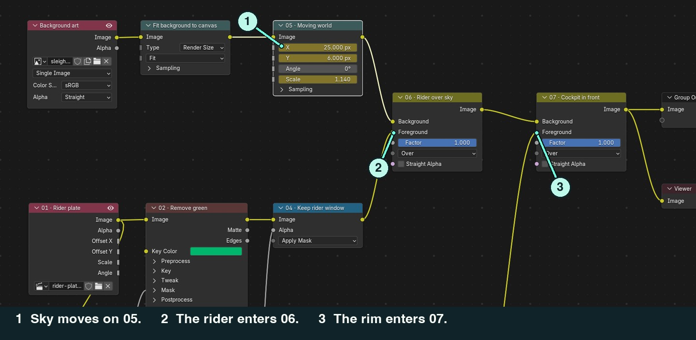
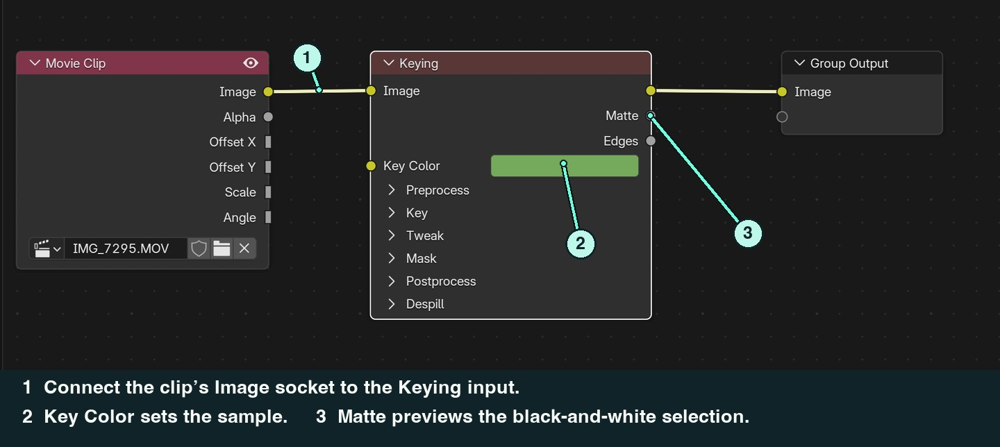
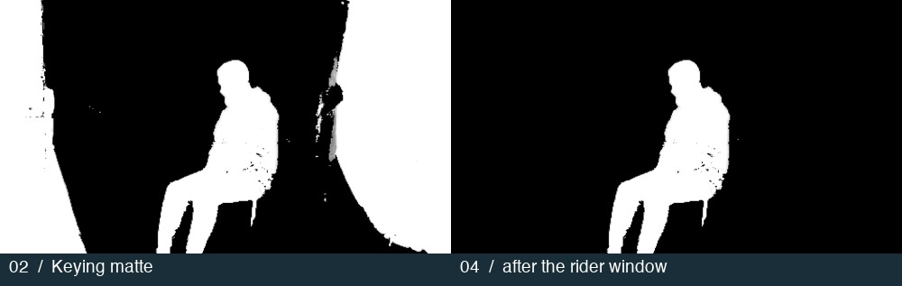
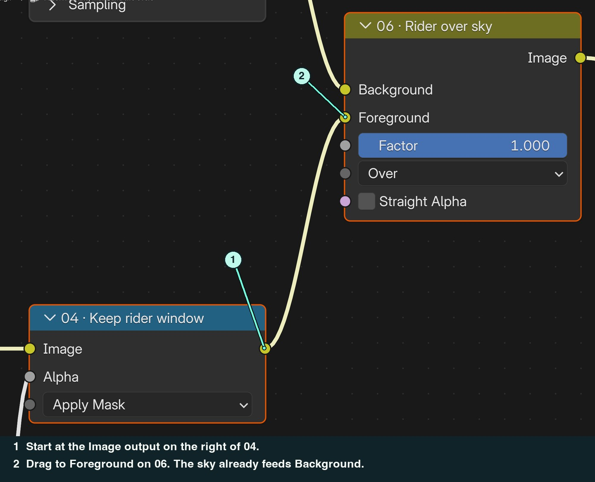
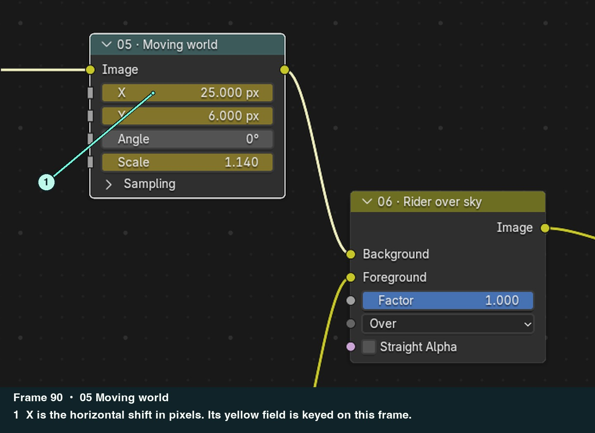

Allow two 70-minute classes. Use Blender 5.2, a mouse or trackpad and the practice files. Extract the entire ZIP before opening Flight-Starter.blend. Both finished Blender files are there for comparison.
The 90-frame practice movie is a cropped, silent copy of about 0:04–0:07 of the camera original. Compare the practice section in the sleigh and starfighter examples.
A plate is the filmed action you want to put into a new world. Your first editing decision is where to cut. A convincing three seconds beats a longer shot with a classroom showing through.
SENTENCE STARTERI would cut before ___ because the edge around ___ changes.
IN SHORTA plate is the filmed action you want to put into a new world. Your first editing decision is where to cut. A convincing three seconds beats a longer shot with a classroom showing through.
READ ALOUD
TODAYFind a usable shot, make a copy and isolate the rider.
File Your two previews on the start page, then the stills below. Focus Follow the outline of the performer’s head and shoulders. Route Compare the two camera positions below.
Look at the early frame. Trace the edge of the hoodie with your finger. Which surface touches its outside edge?
Look at the later frame. Find a place where the same edge now touches the room. A green key can remove green cloth. The room would still be there.
Play either finished shot on the start page. Pause while the rider turns. Name one thing in front of the rider and one thing behind.
Choose a brief: a quiet pass above the village in Santa’s sleigh, or a reconnaissance flight past an icy planet. Write one sentence describing the motion you want the audience to feel.
STEP CHECKLIST
GLOSSARY
Plate: The original photographed shot used as a layer.
Occlusion: A closer object hides part of an object farther away.
Original take, about 4 seconds. The cloth backs the rider; the monitor and stands sit beyond it.Same take, about 13 seconds. Look at the area immediately beside the head before choosing a masking method.
WHYTrimming before doing effects reduces how many changing edges you must repair.
CHECKYou can point to a green-backed edge and a later edge the key cannot separate.
FIXIf you only see green in both frames, ignore the big cloth area and trace the silhouette itself.
WORKED EXAMPLE · DIFFERENT OBJECTFor a cyclist filmed beside a red bus, choose a moment when the helmet is against the plain sky if the bus is hard to separate.
STRETCH (AFTER THE CHECK PASSES)Where would a motivated cut hide the transition from the early shot to a second camera angle?
02
Open a working copy and find the wires
Blender’s Compositor connects operations with wires called noodles. A node processes an image. Work from left to right, following one wire at a time.
SENTENCE STARTERMy three layers from farthest to nearest are ___, ___ and ___.
IN SHORTBlender’s Compositor connects operations with wires called noodles. A node processes an image. Work from left to right, following one wire at a time.
READ ALOUD
TODAYFind a usable shot, make a copy and isolate the rider.
File Unzip the Flight Files folder fully, then open Flight-Starter.blend in Blender 5.2. Focus The Compositor node canvas. Route File → Save As. In the node canvas, Home frames all nodes; the wheel zooms and middle-drag pans.
Keep the .blend files, the rider MP4 and the art folder together. Save a copy beside the starter named My-Flight.blend so relative media paths still work.
Find the node labelled Rider plate. Read the yellow Image socket. Follow its wire to the green-removal node. Read its Image and Matte output labels.
Locate the background, the rider branch and the foreground art. Trace them to the two Alpha Over nodes. The output at the far right is the image Blender will produce.
Move the timeline playhead to frame 45. Press F12 (or Render → Render Image) to process one frame. In the starter the missing rider is deliberate. Use F11 to return to the node editor after viewing the result.
STEP CHECKLIST
GLOSSARY
Node: One image-processing operation.
Socket: The labelled input or output where a wire connects.
Relative path: A media location relative to the .blend file.

The working composite in Blender. Follow the footage to the key, then follow the two image layers into the final output.
WHYStarting from a connected background gives you a known good frame before you add the performer.
CHECKYou can trace the route and see a world and front rim. You have your own file to edit.
FIXPink squares usually mean a missing asset. Keep the folder structure, then use File → External Data → Find Missing Files and select the extracted kit folder.
WORKED EXAMPLE · DIFFERENT OBJECTIf a title disappears from a poster, follow its image wire first. Moving every control at once makes the fault harder to locate.
STRETCH (AFTER THE CHECK PASSES)Predict where you would connect a transparent rain-on-glass image.
03
Read the matte before changing the colour
A keyer estimates which pixels belong to the green screen. Its matte is an image of that decision. White keeps a pixel, black removes it and grey preserves partial coverage such as a soft hair edge.
SENTENCE STARTERAt frame ___ the matte should be ___ on the hoodie and ___ on the cloth.
IN SHORTA keyer estimates which pixels belong to the green screen. Its matte is an image of that decision. White keeps a pixel, black removes it and grey preserves partial coverage such as a soft hair edge.
READ ALOUD
TODAYFind a usable shot, make a copy and isolate the rider.
File My-Flight.blend at frame 45. Focus The Remove green node and its Matte output. Route Temporarily connect Matte to Group Output’s Image socket. Render one still to inspect it.
Find the yellow Image wire that currently reaches Group Output. Identify its source so you can put it back.
Drag from Remove green → Matte to the Group Output → Image input. Render one frame. Look at the forehead, hoodie and green cloth rather than judging the whole image by its brightness.
Return the final composite wire to Group Output. The prepared Key Color is #00B76D (sRGB), Black Level 0.18, White Level 0.76. To try the eyedropper, change the right-hand Properties area to Movie Clip Editor with its editor-type menu. Pick rider-plate.mp4 in its clip selector and press Home over the image to fit. On the node, click Key Color → eyedropper, then click a midtone patch of cloth in that second area. Escape cancels the picker.
Practice in your copy: compare the matte on frames 1 and 90. If you experiment with the key, undo one change at a time. Return to the prepared settings if skin develops holes.
In your saved practice copy, put the pointer over empty node space. Use Shift+A, search for Keying and place the new node on empty canvas. Connect 01 Image → new Keying Image. Set Key Color to the sampled green. Set Black Level to 0.18 and White Level to 0.76. Drag the new Matte output to Group Output → Image and inspect one frame.
Look for the faint crease rising diagonally behind the rider. Connect the existing Cloth fold cleanup → Holdout to this new node’s Garbage Matte and inspect the same frame. This helper rejects an additional range of greens in the folds. Limit its reach if it removes part of a subject’s clothing. Restore 07 → Group Output. To use your new key for the shot, connect its Image output to 04 → Image, leaving the mask wire in place.
STEP CHECKLIST
GLOSSARY
Matte: A per-pixel map of opacity.
Spill: Green light reflected onto the subject.
Despill: Reducing that unwanted green cast without erasing the subject.

The actual Blender Keying node. Key Color sets the sample, Image carries the cut-out colour, and Matte reveals the separation.

Frame 45, before and after the rider window. White keeps the performer. The raw key can also keep room outside the window. The second mask cuts that away.
WHYThe matte separates a bad key from a bad layer connection. A dark hole in the face cannot be fixed by changing the colour of the sky.
CHECKThe rider’s centre stays solid. The green next to the head is dark. Some opaque room outside the rider is expected at this point.
FIXIf the output is still black and white after practice, reconnect the last Alpha Over image to Group Output. If the face vanishes, restore the prepared Key Color.
WORKED EXAMPLE · DIFFERENT OBJECTA translucent veil should be partly grey in its matte. Forcing every pixel to solid black or white would cut off its soft edge.
STRETCH (AFTER THE CHECK PASSES)Which would you adjust for a thin green edge on an otherwise solid cheek: spill suppression or a tighter cut? Explain your first choice.
04
Keep the rider and put the cockpit in front
A garbage matte limits where footage is allowed to appear. Our rider window removes distant classroom edges; the colour key handles the detail near the performer. The illustrated rim hides the lower edge of the take.
SENTENCE STARTERThe rim should cover ___ because it is closer than ___.
IN SHORTA garbage matte limits where footage is allowed to appear. Our rider window removes distant classroom edges; the colour key handles the detail near the performer. The illustrated rim hides the lower edge of the take.
READ ALOUD
TODAYFind a usable shot, make a copy and isolate the rider.
File My-Flight.blend. Focus The empty rider input on Rider over sky. Route Drag Keep rider window → Image into the upper layer (Foreground) on Rider over sky.
Find Keep rider window. This node uses the rider mask and preserves the transparency the keyer already made.
On Rider over sky, leave Background connected to the sky. Drag the Image output from Keep rider window into Foreground. Replace only the foreground connection if one is already present.
Follow the result into Cockpit in front. Its background is the combined sky and rider, and its foreground is the transparent cockpit or sleigh rim. Restore this last node’s Image output to Group Output.
Render a still at frame 45. Then try frames 1 and 90. Inspect both shoulders and where the torso meets the foreground. Save your project.
How was the rider window made?
The starter has a Box Mask at Position X 0.456, Y 0.451, Size X 0.365, Y 0.510. It defines the patch that can contain the rider. Its Mask goes into the Alpha socket on 04 (Set Alpha). Leave 04 on Apply Mask, so the rectangle multiplies the detailed key instead of replacing it with an opaque box.
Test the idea in your working copy. Change just the box width, render a still, and see which shoulder disappears first. Restore 0.365 before continuing.
STEP CHECKLIST
GLOSSARY
Alpha Over: Places a foreground over a background using the foreground’s opacity.
Garbage matte: A coarse mask that removes parts of the set outside the useful action.

Make this one connection in the starter. Drag Image from 04 to the Foreground input of 06. Leave its existing Background wire in place.One wire, same frame. The starter shows an empty seat. The finished connection puts the filmed rider behind the rail.
WHYA rim that stays in front of the hoodie makes the actor look seated inside the vehicle.
CHECKThe face is visible against the sky, the rim crosses the lower torso and no green room is visible around the head.
FIXRim behind the person? Trace the second Alpha Over node. Missing person? Check the foreground input on the first, then inspect the matte. Hard vertical cutoff? Check the mask across all three frames.
WORKED EXAMPLE · DIFFERENT OBJECTIn a train-window shot, the landscape is behind the passenger while the near sill hides the lower coat. Swap the last two layers and the coat appears painted onto the sill.
STRETCH (AFTER THE CHECK PASSES)Predict what would change if you plugged the raw, unkeyed footage into the rider input. Test and undo.
05
Choose your vehicle
The actor stays the same in both flights. The foreground silhouette and what passes behind the rider tell us which vehicle and world they inhabit.
SENTENCE STARTERThe ___ rim communicates ___ because ___.
IN SHORTThe actor stays the same in both flights. The foreground silhouette and what passes behind the rider tell us which vehicle and world they inhabit.
READ ALOUD
TODAYChange the world, direct the motion and show independent evidence.
File My-Flight.blend and the four supplied art files inside art/. Focus The two Image nodes loading the world and the rim. Route Change an Image node’s file via its folder icon. Leave the rider movie alone.
Start with the sleigh. Inspect the wooden rail and village lights together. Look at the near rim to judge whether it hides the cut across the rider’s body.
To switch to the starfighter, open starfighter-background.jpg on the background Image node. Then open starfighter-foreground.png on the foreground Image node. To return, use the two files beginning sleigh-.
Render the same frame before and after the swap. Compare where your eye goes first. Pick the version where the pilot’s face reads best for your brief.
Keep the PNG for the rim. If you want a reference, open the corresponding finished .blend in a separate session or after saving your copy.
STEP CHECKLIST
GLOSSARY
Foreground: The closest layer in this composite.
Alpha channel: The image information that stores which areas of the PNG are transparent.
The same performance in two vehicles. Compare the distant horizon, the near rim and the framing of the face.
WHYHolding the plate constant lets you see exactly what the artwork contributes.
CHECKThe foreground opening is transparent in both versions. The plane of the rider stays between two visible depths.
FIXA solid rectangle over everything usually means the background JPG was loaded as the foreground. Load the matching PNG there.
WORKED EXAMPLE · DIFFERENT OBJECTA canoe and a submarine can share an actor plate; the shape of the gunwale or porthole changes what the audience infers.
STRETCH (AFTER THE CHECK PASSES)If the face is cool but the village is warm, identify one grading or art change you would test without changing the matte.
06
Make the world drift
Relative motion sells the flight. A keyframe remembers a value at a time. Two different values let Blender calculate the positions between. Move the distant world while the camera-mounted cockpit remains steady.
SENTENCE STARTERFrom frame ___ to ___, ___ moves while ___ stays still.
IN SHORTRelative motion sells the flight. A keyframe remembers a value at a time. Two different values let Blender calculate the positions between. Move the distant world while the camera-mounted cockpit remains steady.
READ ALOUD
TODAYChange the world, direct the motion and show independent evidence.
File My-Flight.blend. Focus Moving world, the Transform node on the background branch. Route Timeline → frame 1, then frame 90. Hover over the horizontal translation field when inserting a key.
Examine the prepared background motion at frames 1 and 90. Write down both X values before changing them. The artwork has a little extra room around the visible frame.
At frame 1 set a modest horizontal offset. Hover over that same field and press I to record it (or use its right-click keyframe command). The reference starts with X −28 px, Y −5 px and Scale 1.09. At frame 90 it has X +25 px, Y +6 px and Scale 1.14. Change X for this practice; leave the supplied Y and Scale animation in place.
At frame 90 set a different X value and insert or replace its keyframe. Start with a change similar in size to the original. Compare the centre of the frame rather than increasing the travel immediately.
Inspect frames 1, 45 and 90 one at a time. A landmark should drift smoothly while the cockpit stays attached to the frame. If an empty strip appears, reduce the travel. Save.
STEP CHECKLIST
GLOSSARY
Keyframe: A value stored at a specific time.
Overscan: Extra image outside the visible frame, leaving room to move it.

At frame 90 the worked shot has an X value of +25 pixels on node 05. Put the pointer over this number before pressing I.First, middle and last frames from the worked flight. Follow a distant landmark against the near rim to see the difference between motion and a cut.
WHYAnimating the entire composite would slide the rider and dashboard together across the screen. The Transform belongs on the world branch.
CHECKYou can name the feature that moved and the one that stayed fixed. No black strip appears at either end.
FIXIf both endpoints show the same X, first select the right frame. Insert or replace the key there and move back to the other end to verify it held.
WORKED EXAMPLE · DIFFERENT OBJECTFrom a train, the window frame stays still as the hills drift past. Moving the window frame instead would suggest a camera sliding across the carriage.
STRETCH (AFTER THE CHECK PASSES)Try half the travel at the same duration. Which version feels heavier? Give one observation.
07
When the green screen runs out
A colour key cannot guess that the grey wall beside the head is farther away than the grey hoodie. A rotoscope mask follows an outline over time. Decide whether that additional work buys a better shot.
SENTENCE STARTERI would ___ from frame ___ because the background touches ___.
IN SHORTA colour key cannot guess that the grey wall beside the head is farther away than the grey hoodie. A rotoscope mask follows an outline over time. Decide whether that additional work buys a better shot.
READ ALOUD
TODAYChange the world, direct the motion and show independent evidence.
File The late still, and optionally your original movie in a separate Blender file. The supplied practice plate ends before this section. Focus Trace the hairline, jaw, shoulder and forearm; leave space for soft edges. Route Movie Clip Editor → Mask mode. For the short core flight, keep using the supplied early cut.
On the late still below, find the first edge you would have to trace. Sketch a closed outline around the visible head and torso. Put extra points where the outline turns, fewer along a straight shoulder.
Optional original-take study: in a separate file open the original in the Movie Clip Editor, switch its mode to Mask and create a mask. In the default Blender keymap, Ctrl + left-click adds a point. After tracing the perimeter, press Alt+C to close the spline. Select its points and press I with the pointer in Mask view to insert a shape key (also under Mask → Animation).
Advance a few frames until the outline drifts. Reposition the points to the new silhouette, insert a shape key and check between the saved shapes. Use closer keys near sharp head turns.
In the Compositor, a Mask node can supply this person-shaped mask to a Set Alpha node in Apply Mask mode on the source clip. For a non-green background use that silhouette to isolate the original colours. Match the switch with the green-keyed section at a cut.
STEP CHECKLIST
GLOSSARY
Rotoscoping: Animating a mask to follow an object’s silhouette.
Shape key for a mask: A saved arrangement of mask control points at one frame.
The later part of the original take in Blender’s Movie Clip Editor. A rectangle around the rider would keep some room along with the rider.
WHYA garbage window excludes broad unwanted areas. Only a moving silhouette or a new camera setup will remove background directly against the subject on a non-green shot.
CHECKYou can show where a colour-only key fails and describe how to check a moving mask between its keyframes.
FIXIf the outline lags on an in-between frame, add a shape key there. If the whole frame drifts behind a rigid 3D vehicle, the longer moving-camera version also needs a tracked camera or a redesigned shot.
WORKED EXAMPLE · DIFFERENT OBJECTThe space between a waving arm and the body may need a second subtracting shape. A box enclosing both cannot remove that gap.
STRETCH (AFTER THE CHECK PASSES)Choose a second angle where you would cut instead of rotoscoping and defend the time saved.
08
Director’s change and hand-in
Your director wants a different feeling with the same performance. Make a fresh choice that can be seen in the picture. A successful shot should survive inspection at its beginning, middle and end.
SENTENCE STARTERAt frame ___, the change to ___ makes the flight feel ___ because ___.
IN SHORTYour director wants a different feeling with the same performance. Make a fresh choice that can be seen in the picture. A successful shot should survive inspection at its beginning, middle and end.
READ ALOUD
TODAYChange the world, direct the motion and show independent evidence.
File Save a new version called My-Flight-Change.blend beside the original working copy. Focus Choose your vehicle, a visual intention and one controllable change. Route Review frame 1, 45 and 90 with Render → Render Image. Each is a single still.
Choose one brief: a calm approach past a landmark or a faster crossing past the same landmark. Decide how to change the world movement yourself. Keep the person and rim believable.
Before editing, record your prediction in your own notebook. After editing, compare the three frames. Check the hair, each shoulder, the lower edge of the hoodie and the edges of the sky.
In the Render Result window choose Image → Save As to keep at least one PNG still. Save the .blend separately. To hand the project over, include the working file, rider-plate.mp4 and art folder together in their original arrangement.
Give your teacher the before/after frames or show them at your workstation. Identify your change, locate the evidence by frame, explain what it does for the audience, and name your next fix.
Save your own three-second MP4
Save the Blender file first. In Output Properties confirm frames 1–90 at 30 fps and 960 × 540. For an even smaller test set the resolution percentage to 50%.
In the Output panel choose a writable destination and a filename prefix such as My-flight-. Switch Media Type to Video, choose FFmpeg Video, then set Encoding → Container MPEG-4, Video Codec H.264.
Choose Render → Render Animation. Keep the frame range short. Open the resulting MP4 from that folder and check that it moves, includes the rider, and lasts about three seconds. Blender can append the frame range to the filename.
Work in the small supplied project for this export. Leave the full 4K original alone. Exporting a movie is optional if you are handing in the editable project plus stills.
STEP CHECKLIST
GLOSSARY
Render Result: The calculated output frame Blender keeps for viewing.
Revision: A separately saved version that preserves an earlier decision.
Worked sleigh composite. On your own version inspect the hair, shoulders, seat edge and horizon before deciding the shot is finished.
WHYAn intentional variation shows you can use the tools to answer a changed brief.
CHECKAnother person can open your project, find the rider at frame 45 and identify the motion decision from your evidence.
FIXIf a reopened project shows pink, rebuild the shared folder layout and find the missing files before handing it over.
WORKED EXAMPLE · DIFFERENT OBJECTFor your independent check, use the criteria and your own evidence. Your change and reasoning should be yours.
STRETCH (AFTER THE CHECK PASSES)Describe how you would shoot a wider take that needs less masking: move the performer, the green cloth or the camera and justify the choice.